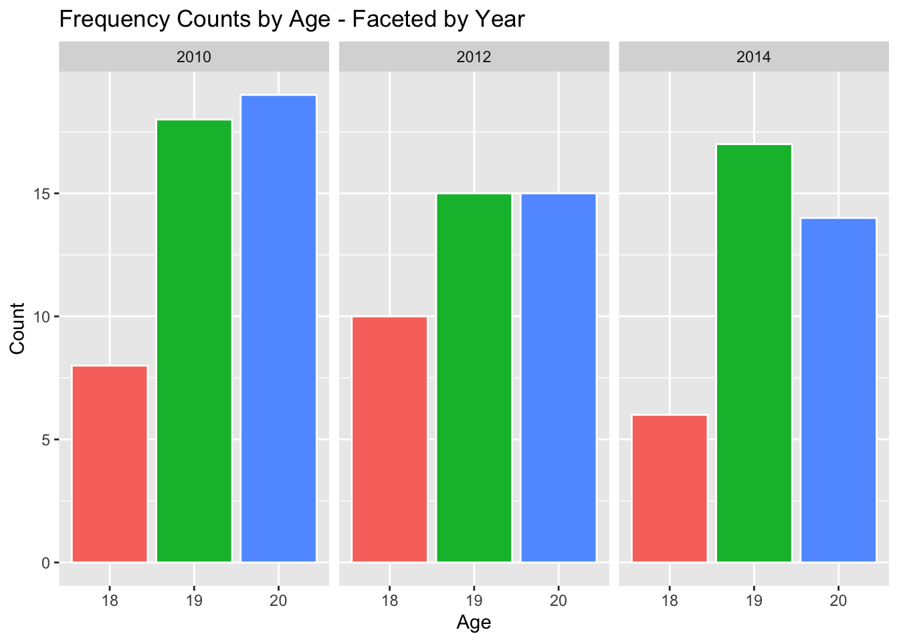
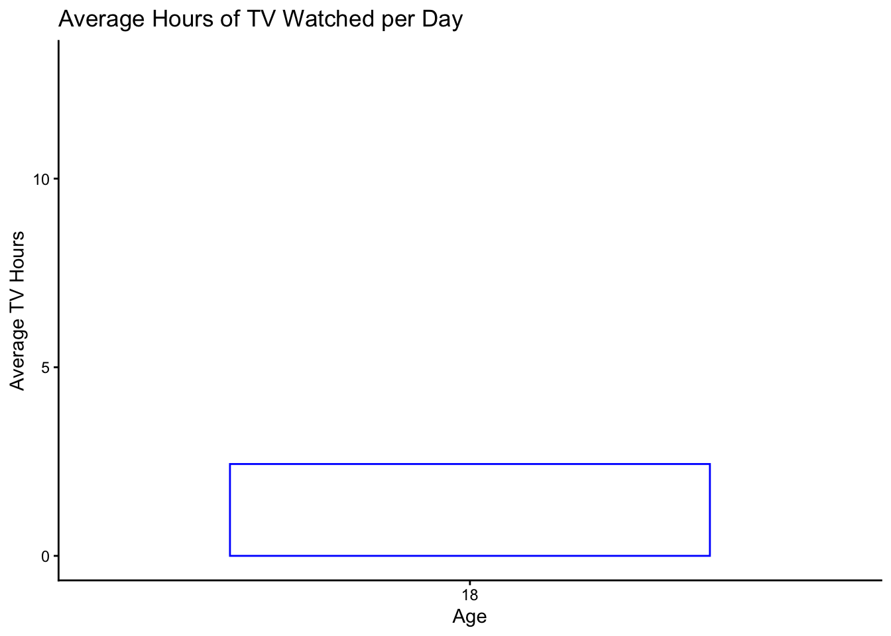
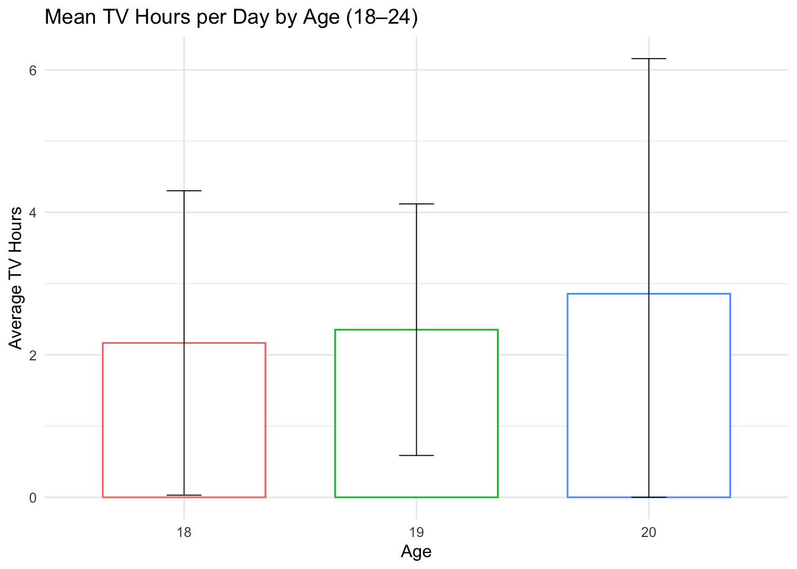
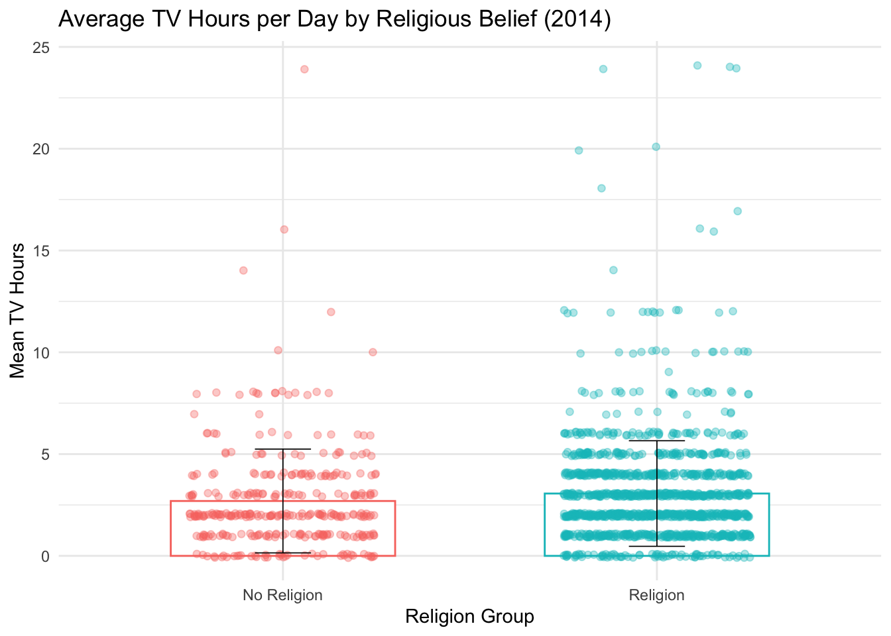

#### RUN CODE BLOCK (green triangle right hand corner of grey box) >>>>>
library(tidyverse)
library(janitor)
library(psych)
library(gt)
library(gtsummary)
library(ggpubr)
library(naniar)
library(ggthemes)
#### If RED line appears go to next code block & follow directionsLab 2: Exploring the General Social Survey (GSS)
PSY 150: Data Wrangling + Differences in Means & Variation
Lab goals
By the end of this lab you will be able to:
- Load an applied social‑science dataset (
GSS) from an R package - View rows/columns and simple summaries
- Rename columns to clearer names
- Select a subset of columns you care about
- Filter rows to focus on specific groups
- Convert variables to factors (categories)
- Label and re‑order factor (category) levels
- Create plots to look at differences in means & variation across groups
Data source:
In this lab we use an open source data-set called General Social Survey (GSS). It contains responses from U.S. adults from 2000–2014 on topics like age, marital status, political party, religion, income, and hours of TV watched. These are real survey responses.
📦 Packages: Install once… load libraries every time!
- If a
yellow bannerappears at top of screen, asking you to install packages clickYES - Packages include functions other R users have made for us to make our lives easier!
Step 1: Load packages
STEP 0: Only do this if a package(s) above did not load (turns red)
# DIRECTIONS:
# 1. Each line starts with a "#" symbol, which means it is ignored by R (a comment).
# 2. To "UNCOMMENT” a line, delete the "#" at the beginning of that line.
# 3. CLICK RUN: This will install the package with the matching name in quotes.
# 4. "RE-COMMENT":After installation is finished, put the "#" back at the start of the line.
# *This makes the text green again so it won’t try to install every time.*
# 5. RETURN TO PREVIOUS CODE BLOCK and RE-RUN again to load the packages.
# install.packages("tidyverse")
# install.packages("janitor")
# install.packages("psych")
# install.packages("gt")
# install.packages("gtsummary")
# install.packages("ggpubr")
# install.packages("naniar")
# install.packages("ggthemes")
# NOTE: AFTER install finishes you must return to code block above & RE-RUNKeyboard shortcuts (Use them!)
MAC / WINDOWS
Run code(at cursor): COMMAND/CONTROL + RETURN/ENTERPipe operator(|>): COMMAND/CONTROL + SHIFT + MAdd code chunk: COMMAND/CONTROL + OPTION/ALT + IAssignment operator(<-): OPTION/ALT + MINUS(“-”)Search: COMMAND/CONTROL + F
Read in the data
Load in the data set called gss_cat from the forcats package
gss_raw <- forcats::gss_catNote: Always take a look at the data!
Prepare data for exploring
names(gss_raw)[1] "year" "marital" "age" "race" "rincome" "partyid" "relig"
[8] "denom" "tvhours"Qn: What are some of the variables available in the data gss_raw?
Response: The dataset includes variables such as year (survey year), marital (marital status), age, race, rincome (reported income range), partyid (political party identification), relig (religion), denom (denomination), and tvhours (hours of TV watched per day).
gss_vars <- gss_raw |>
select(year, age, marital, relig, tvhours) |>
rename(tv_hours = tvhours) |>
drop_na(tv_hours)Qn: What does the function select() do?
Response: The select() function allow us to choose a subset of the variables (columns) that we want to focus on. In the code above we have selected 5 variables and re-ordered the columns.
Qn: What does NA stand for and what does drop_na(tv_hours) do?
Response: Missing values are coded NA in R. The function `drop_na() removes any rows in which the tv_hours variable has missing cells (NA). After dropping rows in which data is missing for tv_hours, we’re left with about 11,337 responses.
glimpse(gss_vars)Rows: 11,337
Columns: 5
$ year <int> 2000, 2000, 2000, 2000, 2000, 2000, 2000, 2000, 2000, 2000, 2…
$ age <int> 26, 67, 39, 25, 36, 44, 47, 53, 52, 52, 40, 44, 40, 48, 49, 1…
$ marital <fct> Never married, Widowed, Never married, Divorced, Never marrie…
$ relig <fct> Protestant, Protestant, Orthodox-christian, None, Christian, …
$ tv_hours <int> 12, 2, 4, 1, 3, 0, 3, 2, 1, 1, 7, 3, 3, 1, 2, 2, 1, 3, 4, 7, …Qn: What does the glimpse output tell us about gss_vars now?
Response: It shows that gss_vars data.frame has 11,337 observations (rows) and 5 variables (columns).
Age distribution: How old are the GSS survey participants?
Take a look at the age range in the GSS survey
tabyl(gss_vars$age)gss_youth <- gss_vars |>
select(year,age,tv_hours) |>
filter(age <= 20)Qn: What does the filter() function do?
Response: This function allows us to filter specific rows based on values in one or more columns. For example, in this case we have filtered rows in which respondents reported their age as less than or equal to 20 years.
Qn: What ages are included in the new data.frame we created gss_youth, and roughly how many observations does it have?
Response: The new data.frame gss_youth keeps only the respondents who are 20 or younger (i.e., ages 18, 19, and 20). This focuses on the youngest adults in the survey.
How many survey respondents do we have for each age (18-20 years)?
gss_youth |>
ggplot(aes(x = factor(age), fill = factor(age))) +
geom_bar(color = "white") +
labs(
title = "How many survey respondents do we have for each age (18-20 years)?",
x = "Age", y = "Count") +
theme_minimal() +
theme(legend.position = "none")
Faceted plots: Separating plot by year surveyed from 2010 - 2014
This let’s us zoom-in on the data and see how response rates vary by year & age.
gss_youth |>
filter(year >= 2010) |>
ggplot(aes(x = factor(age), fill = factor(age))) +
geom_bar(color = "white") +
facet_wrap(~ year, ncol = 3) + # Facet plot by year
labs(
title = "Frequency Counts by Age - Faceted by Year",
x = "Age", y = "Count") +
theme(legend.position = "none")
Qn: Across the 3 years surveyed, do we see differences in counts: Which year had the highest number of participants? Which age had the least number of participants?
Response: The year 2010 has the highest number of survey respondents. Respondents 18 years of age had the lowest response rate.
TV watching habits
Let’s look at the variable Hours of TV watched in a day.
gss_youth |>
filter(age == 18) |>
select(tv_hours) |>
describe() |>
select(n, mean, median, sd, min, max, range) n mean median sd min max range
tv_hours 46 2.43 2 2.31 0 13 13Qn: How many hours of TV on average does this subset of the sample watch (age=18)? What is the median?
Response: On average, they watch about 3 hours of TV per day. The median is 2 hours indicating an asymetric skewed distribution.
Take a look at the distribution for TV watching
Create a density curve plot to see the shape of the tv_hours distribution for respondents age 18 only.
gss_youth |>
filter(age == 18) |>
ggplot(aes(x = tv_hours)) +
geom_density(fill = "lightblue", alpha = 0.4) +
geom_vline(xintercept = mean(gss_youth$tv_hours), color = "red", size = 1) +
labs(title = "Density of TV Hours (Age 18)",
x = "TV Hours per Day", y = "Density") +
theme_minimal()
Note: This plot is called a density curve (a smoothed version of a histogram). The red line marks the mean TV hours for 18 year-old respondent subset.
Qn: What is the shape of the distribution of TV hours for 18-year-old respondents?
Response: The distribution is skewed to the right (positively skewed). Most 18-year-olds watch only a few hours of TV per day, but a small number watch many hours, creating a long tail to the right.
How much TV do 18 year old’s watch on average from 2000-2014?
What is the average hiding?
gss_youth |>
filter( age == 18) |>
summarise(mean_tv = mean(tv_hours), sd_tv = sd(tv_hours), .groups = "drop") |>
ggplot(aes(x = "18", y = mean_tv)) +
geom_col(width = 0.7, fill = "white", color = "blue") +
# geom_jitter(data = gss_youth |> filter(age == 18, !is.na(tv_hours)),
# aes(x = "18", y = tv_hours), height = 0,
# width = 0.2, alpha = 0.4, size = 2.5, color = "blue") +
expand_limits(y = 0) +
coord_cartesian(ylim = c(0, 13)) +
labs(title = "Average Hours of TV Watched per Day",
x = "Age", y = "Average TV Hours") +
theme_classic()
Qn: What is the average value hiding about the variable tv_hours? Why could focusing only on this average be misleading?
Response: The average by itself hides the variation in TV watching. If we only look at the mean (around 3 hours), we might think most 18-year-olds watch about 3 hours of TV, but in reality there is a lot of variability. Some 18-year-olds watch zero hours, while one participant watches 10+ hours. The mean doesn’t show this spread or the long tail (skew). The mean could be pulled (influenced) by a few people who watch a ton of TV.
Grouping by age: Comparing TV watching across age (18 - 20)
For a specific snapshot, let’s focus on the year 2014 and compare the TV watching of respondents 18 - 20
tvage_stats <- gss_youth |>
filter(year == 2014) |>
group_by(age) |>
summarise(mean_tv = mean(tv_hours),
sd_tv = sd(tv_hours),
.groups = "drop")Qn: What does group_by(age) do when combined with summarise()?
Response: The function group_by(age) tells R to split the data into separate groups based on the value of age. Next, using summarise() we calculate statistics (Mean, SD) for each group and then combines this infomation into a table.
Look at means for tv_hours grouped by age using a barplot
tvage_stats |>
ggplot(aes(x = factor(age), y = mean_tv, fill = factor(age))) +
geom_col(show.legend = FALSE) +
geom_text(aes(
label = paste0("Mean = ", round(mean_tv, 1), " hours"),
y = mean_tv + 0.1), size = 3.5) +
labs(title = "Mean Hours of TV Watched per Day by Age (18–24)",
x = "Age",
y = "Average TV Hours") +
theme_minimal() +
theme(plot.title = element_text(hjust = 0.5))
Qn: What could explain why the average TV hours differ more between 19- and 20-year-olds compared to the other age groups?
Response:
Plotting variation: What is the mean hiding?
tvage_stats |>
ggplot(aes(x = factor(age), y = mean_tv,
color = factor(age))) +
geom_col(width = 0.7, show.legend = FALSE, fill = "white") +
# geom_jitter(
# data = gss_youth |> filter(!is.na(tv_hours)),
# aes(x = factor(age), y = tv_hours, color = factor(age)),
# width = 0.15, height = 0,
# alpha = 0.4, size = 1.7) +
geom_errorbar(
aes(ymin = pmax(0, mean_tv - sd_tv), ymax = mean_tv + sd_tv),
width = 0.15,
linewidth = 0.3,
color = "black") +
labs(
title = "Mean TV Hours per Day by Age (18–24)",
x = "Age", y = "Average TV Hours"
) +
theme_minimal() +
guides(color = "none")
Qn: From the plot, describe the difference is variation for TV watching, across the three groups. Which groups mean is most influenced by outliers (extreme values)?
Response:
Do people who are religious watch more (or less) TV?
Prepare data by creating a new variable religion2 with two comparison groups.
# tabyl(gss_vars$relig)
gss_tv_relig <- gss_vars |>
filter(year == 2014) |>
mutate(
religion2 = case_when(
relig == "None" ~ "no_religion",
relig %in% c("No answer", "Don't know", "Not applicable") ~ NA_character_,
TRUE ~ "religion"),
religion2 = factor(religion2,
levels = c("no_religion", "religion"),
labels = c("No Religion", "Religion"))) |>
drop_na(religion2)Qn: How did we create the variable religion2 with two categories (factor levels)?
Response: We combined the religion categories into two groups:
- “No Religion”: This category includes everyone who answered “None” for their religion.
- Respondents who didn’t answer or said “Don’t know” for this question were recoded as missing (
NA). - “Religion”: this includes everyone who reported having a religion (remaining categories).
Compare TV hours between these two groups with a summary table
gss_tv_relig |>
select(religion2,tv_hours) |>
tbl_summary(
by =religion2,
statistic = list(all_continuous() ~ "{mean} ({sd})"),
digits = all_continuous() ~ 1)| Characteristic | No Religion N = 3411 |
Religion N = 1,3161 |
|---|---|---|
| tv_hours | 2.7 (2.5) | 3.1 (2.6) |
| 1 Mean (SD) | ||
Visualizing TV watching by religion
Step 1: Calculate group-level statistics (means and SDs)
relig_stats <- gss_tv_relig |>
group_by(religion2) |>
summarise(mean_tv = mean(tv_hours), sd_tv = sd(tv_hours), .groups = "drop")Step 2: Plot the averages, standard deviations, and raw data points
relig_stats |>
ggplot(aes(x = religion2, y = mean_tv, color = religion2)) +
geom_col(width = 0.6, fill = "white") +
geom_jitter(data = gss_tv_relig,
aes(x = religion2, y = tv_hours, color = religion2),
width = 0.25, height = 0.1, alpha = 0.35, size = 1.6) +
labs(
title = "Average TV Hours per Day by Religious Belief (2014)",
x = "Religion Group", y = "Mean TV Hours") +
geom_errorbar(aes(ymin = mean_tv - sd_tv,
ymax = mean_tv + sd_tv),
width = 0.15, linewidth = 0.3, color = "black") +
coord_cartesian(ylim = c(0, NA)) +
theme_minimal() +
guides(color = "none", fill = "none")
Qn: Based on the plot, how do the average TV hours and the amount of variation compare between people with No Religion and those with a Religion?
Response: Both groups have very similar average TV hours per day (their bars are nearly the same height). The spread of TV hours (shown by the +1,-1 SD bars and jittered points) is also similar, with wide variation in both groups. This suggests that religious affiliation doesn’t strongly influence how much TV people watch, since the differences in means are small compared to the overall variation.